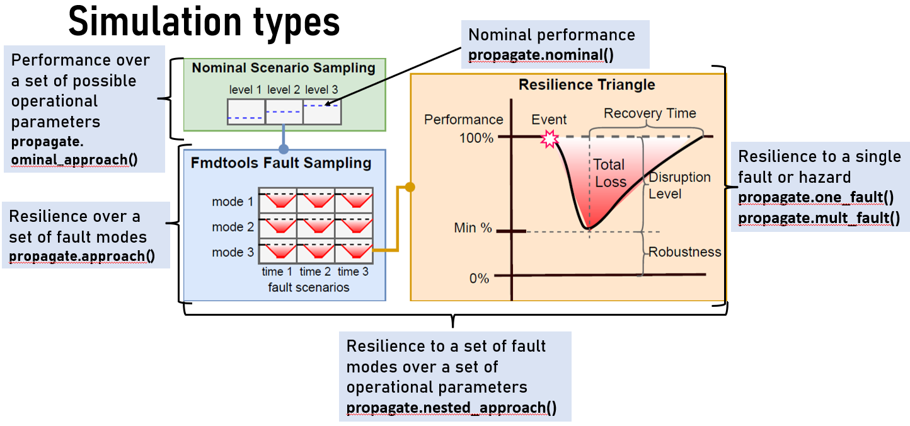

fmdtools.faultsim
The fmdtools.faultsim package is used to simulate fmdtools.modeldef.Model models. It consists of two modules:
fmdtools.faultsim.networks, which conducts network assessment on a given model’s network (which does not require classes for function blocks or behaviors to be defined), and
fmdtools.faultsim.propagate, which simulates the user-defined behaviors of a model over set time(s).
fmdtools.faultsim.networks
Description: Methods for high-level network simulation and analysis.
- Main Methods:
calc_aspl(): Computes average shortest path length of graph representation of model mdl.calc_modularity(): Computes graph modularity given a graph representation of model mdl.find_bridging_nodes(): Determines bridging nodes in a graph representation of model mdl.find_high_degree_nodes(): Determines highest degree nodes, up to percentile p, in graph representation of model mdl.calc_robustness_coefficient(): Computes robustness coefficient of graph representation of model mdl.sff_model(): Susceptible-Fixed-Failed Model Simulationdegree_dist(): Plots degree distribution of graph representation of model mdl.
- fmdtools.faultsim.networks.calc_aspl(mdl, gtype='parameter')
Computes average shortest path length of graph representation of model mdl.
- Parameters
mdl (model or graph) – graph to run the analysis for. (will get from model if provided)
gtype (str) – type of graph representation of the model to show. default is ‘bipartite’
- Returns
ASPL
- Return type
average shortest path length
- fmdtools.faultsim.networks.calc_modularity(mdl, gtype='parameter')
Computes graph modularity given a graph representation of model mdl.
- Parameters
mdl (model or graph) – graph to run the analysis for. (will get from model if provided)
gtype (str) – type of graph representation of the model to show. default is ‘bipartite’
- Returns
modularity
- Return type
Modularity
- fmdtools.faultsim.networks.calc_robustness_coefficient(mdl, trials=100, gtype='bipartite')
Computes robustness coefficient of graph representation of model mdl.
- Parameters
mdl (model or graph) – graph to calculate robustness coefficent for. (will get from model if provided)
trials (int) – number of times to run robustness coefficient algorithm (result is averaged over all trials)
gtype (str) – type of graph representation of the model to show. default is ‘bipartite’
- Returns
RC
- Return type
robustness coefficient
- fmdtools.faultsim.networks.data_average(data)
Averages each column in data
- fmdtools.faultsim.networks.data_error(data, average)
Calculates error for each column in data
- fmdtools.faultsim.networks.degree_dist(mdl, gtype='bipartite')
Plots degree distribution of graph representation of model mdl.
- Parameters
mdl (model or graph) – graph to calculated degree distribution for. (will get from model if provided)
gtype (str) – type of graph representation of the model to show. default is ‘bipartite’
- Returns
fig – plot of distribution
- Return type
matplotlib figure
- fmdtools.faultsim.networks.find_bridging_nodes(mdl, plot='off', gtype='parameter', pos={}, scale=1)
Determines bridging nodes in a graph representation of model mdl.
- Parameters
mdl (model or graph) – graph to run the analysis for. (will get from model if provided)
plot (str (optional)) – plots graph with high degree nodes visualized if set to ‘on’
gtype (str) – type of graph representation of the model to show. default is ‘bipartite’
pos (dict (optional)) – dict of node positions in the model (if desired)
scale (int (optional)) – scale for the plot. Default is 1.
- Returns
bridgingNodes
- Return type
list of bridging nodes
- fmdtools.faultsim.networks.find_high_degree_nodes(mdl, p=90, plot='off', gtype='bipartite', pos={}, scale=1)
Determines highest degree nodes, up to percentile p, in graph representation of model mdl.
- Parameters
mdl (model or graph) – graph to run the analysis for. (will get from model if provided)
p (int (optional)) – percentile of degrees to return, between 0 and 100
plot (str (optional)) – plots graph with high degree nodes visualized if set to ‘on’
gtype (str) – type of graph representation of the model to show. default is ‘bipartite’
pos (dict (optional)) – dict of node positions in the model (if desired)
scale (int (optional)) – scale for the plot. Default is 1.
- Returns
highDegreeNodes
- Return type
list of high degree nodes in format (node,degree)
- fmdtools.faultsim.networks.get_graph(mdl, gtype)
gets the appropriate graph of type gtype from mdl
- fmdtools.faultsim.networks.sff_model(mdl, gtype='parameter', endtime=5, pi=0.1, pr=0.1, num_trials=100, start_node='random', error_bar_option='off')
susc-fix-fail model.
- Parameters
mdl (model or graph) – graph to run trials over (will get from model if provided)
endtime (int) – simulation end time
pi (float) – infection (failure spread) rate
pf (float) – recovery (fix) rate
num_trials (int) – number of times to run the epidemic model, default is 100
error_bar_option (str) – option for plotting error bars (first to third quartile), default is off
start_node (str) – start node to use in the trial. default is ‘random’
- Returns
fig
- Return type
plot of susc, fail, and fix nodes over time
- fmdtools.faultsim.networks.sff_one_trial(start_node_selected, g, endtime=5, pi=0.1, pr=0.1)
Calculates one trial of the sff model
- Parameters
start_node_selected (str) – node to start the trial from
g (networkx graph) – graph to run the trial over
endtime (int) – simulation end time
pi (float) – infection (failure spread) rate
pf (float) – recovery (fix) rate
fmdtools.faultsim.propagate
{kind=link}
The fmdtools.faultsim.propagate module is used to simulate the behaviors of a fmdtools.modeldef.Model model with and without faults. As shown above, each of the methods (described below) fit a given simulation use-case for resilience assessment–single/multiple scenarios, in nominal/faulty scenarios, and at a single set or multiple sets of parameters.
Description: functions to propagate faults through a user-defined fault model
- Main Methods:
nominal(): Runs the model over time in the nominal scenario.one_fault(): Runs one fault in the model at a specified time.mult_fault(): Runs arbitrary scenario of fault modes at specified timessinglefaults(): Creates and propagates a list of failure scenarios in a model over given model timesapproach(): Injects and propagates faults in the model defined by a given sample approach.nominal_approach(): Simulates a model over a range of parameters defined by a nominal approach.nested_approach(): Injects and propagates faults in the model defined by a given sample approach over a range of parameters defined by a nominal approach.
- Private Methods:
list_init_faults(): Creates a list of single-fault scenarios for the graph, given the modes set up in the fault modelprop_one_scen(): Runs a fault scenario in the model over timepropagate(): Injects and propagates faults through the graph at one time-stepprop_time(): Propagates faults through model graph.update_mdlhist(): Updates the model history at a given time.update_flowhist():Updates the flows in the model history at t_indupdate_fxnhist(): Updates the functions (faults and states) in the model history at t_ind
init_mdlhist(): Initializes the model history over a given timerangeinit_flowhist(): Initializes the flow history flowhist of the model mdl over the time range timerangeinit_fxnhist(): Initializes the function state history fxnhist of the model mdl over the time range timerange
- fmdtools.faultsim.propagate.approach(mdl, app, staged=False, track='all', pool=False, showprogress=True, track_times='all', protect=True, run_stochastic=False, **kwargs)
Injects and propagates faults in the model defined by a given sample approach
- Parameters
mdl (model) – The model to inject faults in.
app (sampleapproach) – SampleApproach used to define the list of faults and sample time for the model.
staged (bool, optional) – Whether to inject the fault in a copy of the nominal model at the fault time (True) or instantiate a new model for the fault (False). Setting to True roughly halves execution time. The default is False.
track (str ('all', 'functions', 'flows', 'valparams', dict, 'none'), optional) – Which model states to track over time, which can be given as ‘functions’, ‘flows’, ‘all’, ‘none’, ‘valparams’ (model states specified in mdl.valparams), or a dict of form {‘functions’:{‘fxn1’:’att1’}, ‘flows’:{‘flow1’:’att1’}} The default is ‘all’.
pool (process pool, optional) – Process Pool Object from multiprocessing or pathos packages. Pathos is recommended. e.g. parallelpool = mp.pool(n) for n cores (multiprocessing) or parallelpool = ProcessPool(nodes=n) for n cores (pathos) If False, the set of scenarios is run serially. The default is False
showprogress (bool, optional) – whether to show a progress bar during execution. default is true
track_times (str/tuple) –
- Defines what times to include in the history. Options are:
’all’–all simulated times (‘interval’, n)–includes every nth time in the history (‘times’, [t1, … tn])–only includes times defined in the vector [t1 … tn]
protect (bool) –
- Whether or not to protect the model object via copying
True (default) - re-instances the model (safe) False - model is not re-instantiated (unsafe–do not use model afterwards)
run_stochastic (bool) – Whether to run stochastic behaviors or use default values for stochastic variables. Default is False.
**kwargs (kwargs (params, modelparams, and/or valparams)) – passing parameter dictionaries (e.g., params, modelparams, valparams) instantiates the model to be simulated with the given parameters. Parameter dictionaries do not need to be complete (if incomplete)
- Returns
endclasses (dict) – A dictionary with the rate, cost, and expected cost of each scenario run with structure {scenname:{expected cost, cost, rate}}
mdlhists (dict) – A dictionary with the history of all model states for each scenario (including the nominal)
- fmdtools.faultsim.propagate.construct_nomscen(mdl)
Creates a nominal scenario nomscen given a graph object g by setting all function modes to nominal.
- Parameters
mdl (Model) –
- Returns
nomscen
- Return type
scen
- fmdtools.faultsim.propagate.cut_mdlhist(mdlhist, ind)
Cuts unsimulated values from end of array
- Parameters
mdlhist (dict) – dictionary of model histories for functions/flows
ind (int) – index to cut the history at
- Returns
mdlhist – The model history until the given index.
- Return type
dict
- fmdtools.faultsim.propagate.eq_units(rateunit, timeunit)
Provides conversion factor for from rateunit (str) to timeunit (str) Options for units are: ‘sec’, ‘min’, ‘hr’, ‘day’, ‘wk’, ‘month’, and ‘year’
- fmdtools.faultsim.propagate.exec_nom_helper(arg)
Helper function for executing nominal scenarios
- fmdtools.faultsim.propagate.exec_scen(mdl, scen, nomresgraph, nomhist, track='all', staged=True, track_times='all', run_stochastic=False)
Executes a scenario and generates results and classifications given a model and nominal model history
Parameters
- mdlmodel
The model to inject faults in.
- scenscenario
scenario used to define time and faults where the fault is to be injected
- nomresgraph:
results graph of the nominal model run
- nomhist:
history of results in the nominal model run
- c_mdl:
the nominal model at the time to be executed in the scenarios (a dict keyed by times)
- stagedbool, optional
Whether to inject the fault in a copy of the nominal model at the fault time (True) or instantiate a new model for the fault (False). Setting to True roughly halves execution time. The default is False.
- trackstr (‘all’, ‘functions’, ‘flows’, ‘valparams’, dict, ‘none’), optional
Which model states to track over time, which can be given as ‘functions’, ‘flows’, ‘all’, ‘none’, ‘valparams’ (model states specified in mdl.valparams), or a dict of form {‘functions’:{‘fxn1’:’att1’}, ‘flows’:{‘flow1’:’att1’}} The default is ‘all’.
- track_timesstr/tuple
- Defines what times to include in the history. Options are:
‘all’–all simulated times (‘interval’, n)–includes every nth time in the history (‘times’, [t1, … tn])–only includes times defined in the vector [t1 … tn]
- run_stochasticbool
Whether to run stochastic behaviors or use default values for stochastic variables. Default is False.
- fmdtools.faultsim.propagate.exec_scen_par(args)
Helper function for executing the scenario in parallel
- fmdtools.faultsim.propagate.init_flowhist(mdl, timerange, track='all')
Initializes the flow history flowhist of the model mdl over the time range timerange
- Parameters
mdl (model) – the Model object
timerange (array) – Numpy array of times to initialize in the dictionary.
track ('all' or dict, 'none'), optional) – Which model states to track over time, which can be given as ‘all’ or a dict of form {‘functions’:{‘fxn1’:’att1’}, ‘flows’:{‘flow1’:’att1’}} The default is ‘all’.
- Returns
flowhist – A dictionary history of each recorded flow state over the given timerange.
- Return type
dict
- fmdtools.faultsim.propagate.init_fxnhist(mdl, timerange, track='all')
Initializes the function state history fxnhist of the model mdl over the time range timerange
- Parameters
mdl (model) – the Model object
timerange (array) – Numpy array of times to initialize in the dictionary.
track ('all' or dict, 'none'), optional) – Which model states to track over time, which can be given as ‘all’ or a dict of form {‘functions’:{‘fxn1’:’att1’}, ‘flows’:{‘flow1’:’att1’}} The default is ‘all’.
- Returns
fxnhist – A dictionary history of each recorded function state over the given timerange.
- Return type
dict
- fmdtools.faultsim.propagate.init_mdlhist(mdl, timerange, track='all')
Initializes the model history over a given timerange
- Parameters
mdl (model) – the Model object
timerange (array) – Numpy array of times to initialize in the dictionary.
track (str ('all', 'functions', 'flows', 'valparams', dict, 'none'), optional) – Which model states to track over time, which can be given as ‘functions’, ‘flows’, ‘all’, ‘none’, ‘valparams’ (model states specified in mdl.valparams), or a dict of form {‘functions’:{‘fxn1’:’att1’}, ‘flows’:{‘flow1’:’att1’}} The default is ‘all’.
- Returns
mdlhist – A dictionary history of each model state over the given timerange.
- Return type
dict
- fmdtools.faultsim.propagate.list_init_faults(mdl)
Creates a list of single-fault scenarios for the graph, given the modes set up in the fault model
- Parameters
mdl (Model) – Model with list of times in mdl.times
- Returns
faultlist – A list of fault scenarios, where a scenario is defined as: {faults:{functions:faultmodes}, properties:{(changes depending scenario type)} }
- Return type
list
- fmdtools.faultsim.propagate.mult_fault(mdl, faultseq, track='all', rate=nan, gtype='bipartite', track_times='all', protect=True, run_stochastic=False, **kwargs)
Runs one fault in the model at a specified time.
- Parameters
mdl (Model) – The model to inject the fault in.
faultseq (dict) – Dict of times and modes defining the fault scenario {time:{fxns: [modes]},}
track (str ('all', 'functions', 'flows', 'valparams', dict, 'none'), optional) – Which model states to track over time, which can be given as ‘functions’, ‘flows’, ‘all’, ‘none’, ‘valparams’ (model states specified in mdl.valparams), or a dict of form {‘functions’:{‘fxn1’:’att1’}, ‘flows’:{‘flow1’:’att1’}} The default is ‘all’.
rate (float, optional) – Input rate for the sequence (must be calculated elsewhere)
gtype (str, optional) – The graph type to return (‘bipartite’/’normal’/’typegraph’). The default is ‘bipartite’.
track_times (str/tuple) –
- Defines what times to include in the history. Options are:
’all’–all simulated times (‘interval’, n)–includes every nth time in the history (‘times’, [t1, … tn])–only includes times defined in the vector [t1 … tn]
protect (bool) –
- Whether or not to protect the model object via copying
True (default) - re-instances the model so that multiple simulations can be run successively without causing problems False - Thus, the model object that is returned can be modified and analyzed if needed
run_stochastic (bool) – Whether to run stochastic behaviors or use default values for stochastic variables. Default is False.
**kwargs (kwargs (params, modelparams, and/or valparams)) – passing parameter dictionaries (e.g., params, modelparams, valparams) instantiates the model to be simulated with the given parameters. Parameter dictionaries do not need to be complete (if incomplete)
- Returns
endresult (dict) – A dictionary summary of results at the end of the simulation with structure {flows:{flow:attribute:value},faults:{function:{faults}}, classification:{rate:val, cost:val, expected cost: val}
resgraph (networkx.classes.graph.Graph) – A graph object with function faults and degraded flows noted as attributes
mdlhists (dict) – A dictionary of the states of the model of each fault scenario over time.
- fmdtools.faultsim.propagate.nested_approach(mdl, nomapp, staged=False, track='all', get_phases=False, showprogress=True, pool=False, track_times='all', run_stochastic=False, **app_args)
Simulates a set of fault modes within a set of nominal scenarios defined by a nominal approach.
- Parameters
mdl (Model) – Model Object to use in the simulation.
nomapp (NominalApproach) – NominalApproach defining the nominal situations the model will be run over
staged (bool, optional) – Whether to inject the fault in a copy of the nominal model at the fault time (True) or instantiate a new model for the fault (False). Setting to True roughly halves execution time. The default is False.
track (str ('all', 'functions', 'flows', 'valparams', dict, 'none'), optional) – Which model states to track over time, which can be given as ‘functions’, ‘flows’, ‘all’, ‘none’, ‘valparams’ (model states specified in mdl.valparams), or a dict of form {‘functions’:{‘fxn1’:’att1’}, ‘flows’:{‘flow1’:’att1’}} The default is ‘all’.
get_phases (Bool/List/Dict, optional) – Whether and how to use nominal simulation phases to set up the SampleApproach. The default is False. - If True, all phases from the nominal simulation are passed to SampleApproach() - If a list [‘Fxn1’, ‘Fxn2’ etc.], only the phases from the listed functions will be passed. - If a dict {‘Fxn1’:’phase1’}, only the phase ‘phase1’ in the function ‘Fxn1’ will be passed.
pool (process pool, optional) – Process Pool Object from multiprocessing or pathos packages. Pathos is recommended. e.g. parallelpool = mp.pool(n) for n cores (multiprocessing) or parallelpool = ProcessPool(nodes=n) for n cores (pathos) If False, the set of scenarios is run serially. The default is False
showprogress (bool, optional) – whether to show a progress bar during execution. default is true
track_times (str/tuple) –
- Defines what times to include in the history. Options are:
’all’–all simulated times (‘interval’, n)–includes every nth time in the history (‘times’, [t1, … tn])–only includes times defined in the vector [t1 … tn]
run_stochastic (bool) – Whether to run stochastic behaviors or use default values for stochastic variables. Default is False.
**app_args (kwargs) – Keyword arguments for the SampleApproach. See modeldef.SampleApproach documentation.
- Returns
nested_endclasses (dict) – A nested dictionary with the rate, cost, and expected cost of each scenario run with structure {‘nomscen1’:endclasses, ‘nomscen2’:mdlhists}
nested_mdlhists (dict) – A nested dictionary with the history of all model states for each scenario with structure {‘nomscen1’:mdlhists, ‘nomscen2’:mdlhists}
- fmdtools.faultsim.propagate.new_mdl_params(mdl, paramdict)
Creates parameter inputs for a new model. Used for exploring parameter ranges and seeding models.
- Parameters
mdl (Model) – fmdtools simulation model
paramdict (Dict) – Dict of parameters to update with structure params/modelparams/valparams to update e.g. {‘params’:{‘param1’: 1.0}}
- Returns
params (dict) – Updated param dictionary
modelparams (dict) – Updated modelparam dictionary
valparams (dict) – Updated valparam dictionary
- fmdtools.faultsim.propagate.nominal(mdl, track='all', gtype='bipartite', track_times='all', protect=True, run_stochastic=False, **kwargs)
Runs the model over time in the nominal scenario.
- Parameters
mdl (Model) – Model of the system
track (str ('all', 'functions', 'flows', 'valparams', dict, 'none'), optional) – Which model states to track over time, which can be given as ‘functions’, ‘flows’, ‘all’, ‘none’, ‘valparams’ (model states specified in mdl.valparams), or a dict of form {‘functions’:{‘fxn1’:’att1’}, ‘flows’:{‘flow1’:’att1’}} The default is ‘all’.
gtype (TYPE, optional) – The type of graph to return (‘bipartite’/’normal’/’typegraph’). The default is ‘bipartite’.
track_times (str/tuple) –
- Defines what times to include in the history. Options are:
’all’–all simulated times (‘interval’, n)–includes every nth time in the history (‘times’, [t1, … tn])–only includes times defined in the vector [t1 … tn]
protect (bool) –
- Whether or not to protect the model object via copying
True (default) - re-instances the model so that multiple simulations can be run successively without causing problems False - Thus, the model object that is returned can be modified and analyzed if needed
run_stochastic (bool) – Whether to run stochastic behaviors or use default values. Default is False.
**kwargs (kwargs (params, modelparams, and/or valparams)) – passing parameter dictionaries (e.g., params, modelparams, valparams) instantiates the model to be simulated with the given parameters. Parameter dictionaries do not need to be complete (if incomplete)
- Returns
endresult (Dict) – A dictionary summary of results at the end of the simulation with structure {faults:{function:{faults}}, classification:{rate:val, cost:val, expected cost: val} }
resgraph (MultiGraph) – A networkx graph object with function faults and degraded flows as graph attributes
mdlhist (Dict) – A dictionary with a history of modelstates
- fmdtools.faultsim.propagate.nominal_approach(mdl, nomapp, track='all', showprogress=True, pool=False, track_times='all', run_stochastic=False)
Simulates a set of nominal scenarios through a model. Useful to understand the sets of parameters where the system will run nominally and/or lead to a fault.
- Parameters
mdl (Model) – Model to simulate
nomapp (NominalApproach) – Nominal Approach defining the nominal scenarios to run the system over.
track (str, optional) – States to track during simulation. The default is ‘all’.
showprogress (bool, optional) – Whether to display progress during simulation. The default is True.
pool (Pool, optional) – Parallel pool (e.g. multiprocessing.Pool) to simulate with (if using parallelism). The default is False.
track_times (str/tuple) –
- Defines what times to include in the history. Options are:
’all’–all simulated times (‘interval’, n)–includes every nth time in the history (‘times’, [t1, … tn])–only includes times defined in the vector [t1 … tn]
run_stochastic (bool) – Whether to run stochastic behaviors or use default values. Default is False.
- Returns
nomapp_endclasses (Dict) – Classifications of the set of scenarios, with structure {‘scenname’:classification}
nomapp_mdlhists (Dict) – Dictionary of model histories, with structure {‘scenname’:mdlhist}
- fmdtools.faultsim.propagate.one_fault(mdl, fxnname, faultmode, time=1, track='all', staged=False, gtype='bipartite', track_times='all', protect=True, run_stochastic=False, **kwargs)
Runs one fault in the model at a specified time.
- Parameters
mdl (Model) – The model to inject the fault in.
fxnname (str) – Name of the function with the faultmode
faultmode (str) – Name of the faultmode
time (float, optional) – Time to inject fault. Must be in the range of model times (i.e. in range(0, end, mdl.tstep)). The default is 0.
track (str ('all', 'functions', 'flows', 'valparams', dict, 'none'), optional) – Which model states to track over time, which can be given as ‘functions’, ‘flows’, ‘all’, ‘none’, ‘valparams’ (model states specified in mdl.valparams), or a dict of form {‘functions’:{‘fxn1’:’att1’}, ‘flows’:{‘flow1’:’att1’}} The default is ‘all’.
staged (bool, optional) – Whether to inject the fault in a copy of the nominal model at the fault time (True) or instantiate a new model for the fault (False). The default is False.
gtype (str, optional) – The graph type to return (‘bipartite’/’normal’/’typegraph’). The default is ‘bipartite’.
track_times (str/tuple) –
- Defines what times to include in the history. Options are:
’all’–all simulated times (‘interval’, n)–includes every nth time in the history (‘times’, [t1, … tn])–only includes times defined in the vector [t1 … tn]
protect (bool) –
- Whether or not to protect the model object via copying
True (default) - re-instances the model so that multiple simulations can be run successively without causing problems False - Thus, the model object that is returned can be modified and analyzed if needed
run_stochastic (bool) – Whether to run stochastic behaviors or use default values. Default is False.
**kwargs (kwargs (params, modelparams, and/or valparams)) – passing parameter dictionaries (e.g., params, modelparams, valparams) instantiates the model to be simulated with the given parameters. Parameter dictionaries do not need to be complete (if incomplete)
- Returns
endresult (dict) – A dictionary summary of results at the end of the simulation with structure {flows:{flow:attribute:value},faults:{function:{faults}}, classification:{rate:val, cost:val, expected cost: val}
resgraph (networkx.classes.graph.Graph) – A graph object with function faults and degraded flows noted as attributes
mdlhists (dict) – A dictionary of the states of the model of each fault scenario over time.
- fmdtools.faultsim.propagate.prop_one_scen(mdl, scen, track='all', staged=False, ctimes=[], prevhist={}, track_times='all', run_stochastic=False)
Runs a fault scenario in the model over time
- Parameters
mdl (model) – The model to inject faults in.
scen (Dict) – The fault scenario to run. Has structure: {‘faults’:{fxn:fault}, ‘properties’:{rate, time, name, etc}}
track (str ('all', 'functions', 'flows', 'valparams', dict, 'none'), optional) – Which model states to track over time, which can be given as ‘functions’, ‘flows’, ‘all’, ‘none’, ‘valparams’ (model states specified in mdl.valparams), or a dict of form {‘functions’:{‘fxn1’:’att1’}, ‘flows’:{‘flow1’:’att1’}} The default is ‘all’.
staged (bool, optional) – Whether to inject the fault in a copy of the nominal model at the fault time (True) or instantiate a new model for the fault (False). Setting to True roughly halves execution time. The default is False.
ctimes (list, optional) – List of times to copy the model (for use in staged execution). The default is [].
prevhist (dict, optional) – The previous results hist (for used in staged execution). The default is {}.
run_stochastic (bool) – Whether to run stochastic behaviors or use default values for stochastic variables. Default is False.
- Returns
mdlhist (dict) – A dictionary with a history of modelstates.
c_mdl (dict) – A dictionary of models at each time given in ctimes with structure {time:model}
track_times (str/tuple) –
- Defines what times to include in the history. Options are:
’all’–all simulated times (‘interval’, n)–includes every nth time in the history (‘times’, [t1, … tn])–only includes times defined in the vector [t1 … tn]
- fmdtools.faultsim.propagate.prop_time(mdl, time, initfaults, flowstates={}, run_stochastic=False)
Propagates faults through model graph.
- Parameters
mdl (model) – Model to propagate faults in
time (float) – Current time-step.
initfaults (dict) – Faults to inject during this propagation step.
run_stochastic (bool) – Whether to run stochastic behaviors or use default values for stochastic variables. Default is False.
- Returns
flowstates – States of each flow in the model after propagation
- Return type
dict
- fmdtools.faultsim.propagate.propagate(mdl, initfaults, time, flowstates={}, run_stochastic=False)
Injects and propagates faults through the graph at one time-step
- Parameters
mdl (model) – The model to propagate the fault in
initfaults (dict) – The faults to inject in the model with structure {fxn:fault}
time (float) – The current timestep.
run_stochastic (bool) – Whether to run stochastic behaviors or use default values for stochastic variables. Default is False.
- Returns
flowstates – States of the model at the current time-step.
- Return type
dict
- fmdtools.faultsim.propagate.single_faults(mdl, staged=False, track='all', pool=False, showprogress=True, track_times='all', protect=True, run_stochastic=False, **kwargs)
Creates and propagates a list of failure scenarios in a model.
- NOTE: When calling in a script using parallel=True, keep the script in the if statement:
- “if __name__==’main’:
endclasses, mdlhists = single_faults(mdl)”
Otherwise, the method will keep spawning parallel processes. See multiprocessing documentation.
- Parameters
mdl (model) – The model to inject faults in
staged (bool, optional) – Whether to inject the fault in a copy of the nominal model at the fault time (True) or instantiate a new model for the fault (False). Setting to True roughly halves execution time. The default is False.
track (str ('all', 'functions', 'flows', 'valparams', dict, 'none'), optional) – Which model states to track over time, which can be given as ‘functions’, ‘flows’, ‘all’, ‘none’, ‘valparams’ (model states specified in mdl.valparams), or a dict of form {‘functions’:{‘fxn1’:’att1’}, ‘flows’:{‘flow1’:’att1’}} The default is ‘all’.
pool (process pool, optional) – Process Pool Object from multiprocessing or pathos packages. multiprocessing is recommended. e.g. parallelpool = mp.pool(n) for n cores (multiprocessing) or parallelpool = ProcessPool(nodes=n) for n cores (pathos) If False, the set of scenarios is run serially. The default is False
showprogress (bool, optional) – whether to show a progress bar during execution. default is true
track_times (str/tuple) –
- Defines what times to include in the history. Options are:
’all’–all simulated times (‘interval’, n)–includes every nth time in the history (‘times’, [t1, … tn])–only includes times defined in the vector [t1 … tn]
protect (bool) –
- Whether or not to protect the model object via copying
True (default) - re-instances the model (safe) False - model is not re-instantiated (unsafe–do not use model afterwards)
run_stochastic (bool) – Whether to run stochastic behaviors or use default values for stochastic variables. Default is False.
**kwargs (kwargs (params, modelparams, and/or valparams)) – passing parameter dictionaries (e.g., params, modelparams, valparams) instantiates the model to be simulated with the given parameters. Parameter dictionaries do not need to be complete (if incomplete)
- Returns
endclasses (dict) – A dictionary with the rate, cost, and expected cost of each scenario run with structure {scenname:{expected cost, cost, rate}}
mdlhists (dict) – A dictionary with the history of all model states for each scenario (including the nominal)
- fmdtools.faultsim.propagate.update_flowhist(mdl, mdlhist, t_ind)
Updates the flows in the model history at t_ind
- Parameters
mdl (model) – the Model object
mdlhist (dict) – dictionary of model histories for functions/flows
t_ind (int) – index to update the history at
- fmdtools.faultsim.propagate.update_fxnhist(mdl, mdlhist, t_ind)
Updates the functions (faults and states) in the model history at t_ind
- Parameters
mdl (model) – the Model object
mdlhist (dict) – dictionary of model histories for functions/flows
t_ind (int) – index to update the history at
- fmdtools.faultsim.propagate.update_mdlhist(mdl, mdlhist, t_ind, track='all')
Updates the model history at a given time.
- Parameters
mdl (model) – Model at the timestep
mdlhist (dict) – History of model states (a dict with a vector of each state)
t_ind (float) – The time to update the model history at.
track (str ('all', 'functions', 'flows', 'valparams', dict, 'none'), optional) – Which model states to track over time, which can be given as ‘functions’, ‘flows’, ‘all’, ‘none’, ‘valparams’ (model states specified in mdl.valparams), or a dict of form {‘functions’:{‘fxn1’:’att1’}, ‘flows’:{‘flow1’:’att1’}} The default is ‘all’.
- fmdtools.faultsim.propagate.update_params(params, **kwargs)
Updates a dictionary with the given keyword arguments
- Parameters
params (dict) – Parameter dictionary
**kwargs (kwargs) – New arguments to add/update in the parameter dictionary
- Returns
params – Updated parameter dictionary
- Return type
dict